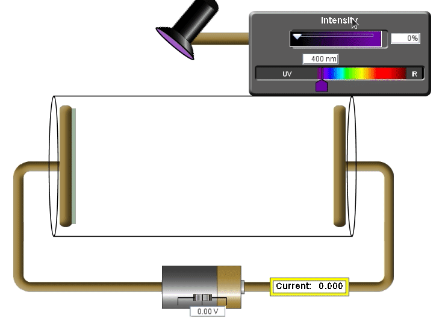
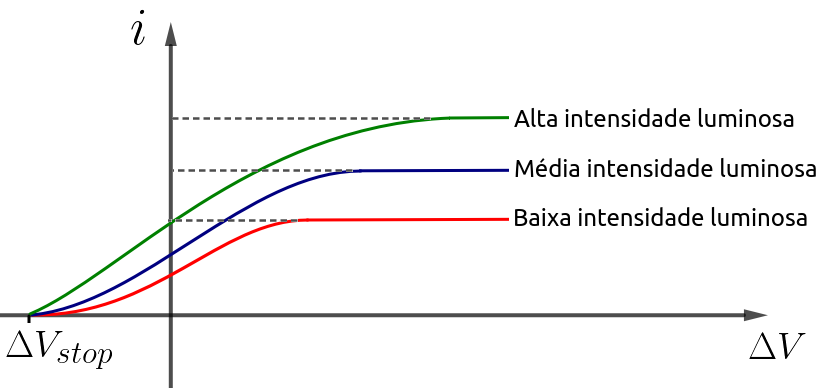

Aula13-99: Efeito fotoelétrico
Experimento de Philipp Von Lenard
Philipp Von Lenard (★ 1862 — 1947 ✝) foi o físico alemão que concebeu o seguinte experimento: uma ampola de gás interior rarefeito tem, em suas extremidades internas, duas placas condutoras eletrizadas — uma negativamente (cátodo) e outra positivamente (ânodo) —, as quais se ligam a um gerador. Compõe ainda o aparato experimental um gerador de luz (ondas eletromagnéticas) que focaliza a luz no cátodo. A experiência consiste em disparar luz contra o cátodo e analisar, por intermédio de um amperímetro, a corrente no circuito cátodo-ânodo.
Realizando-se o experimento sem gerador elétrico (com DDP nula), observava-se que:
|
 |
A) Se não há incidência luminosa, não há corrente elétrica; B) A corrente elétrica ocorre quase que instantaneamente após a incidência luminosa e não depende da intensidade luminosa; C) A corrente elétrica depende da intensidade luminosa; D) A corrente elétrica depende da frequência da luz; E) Abaixo de uma determinada frequência, a corrente elétrica torna-se nula, não importa o quão intensa seja a incidência luminosa. A frequência de corte depende da matéria constituinte do cátodo; |
Variando-se a DDP no gerador, constata-se que:
|
 |
F) Para uma dada intensidade luminosa, o aumento da DDP impõe um limite de intensidade de corrente elétrica; G) Para um dado tipo de cátodo, existe uma DDP que impede a propagação de corrente elétrica. |
Abordagem clássica do fenômeno
Muitos dos efeitos observados no experimento podiam ser explicados pela física clássica; outros, porém, eram incompreensíveis.
A) Se não há incidência luminosa, não há corrente elétrica: isso é previsto mesmo na teoria clássica; se não há intensidade luminosa incidente sobre a placa, não há energia para provocar qualquer movimentação de elétrons.
B) A corrente elétrica ocorre quase que instantaneamente após a incidência luminosa e isto não depende da intensidade luminosa: isso não se justifica por meio da teoria clássica, pois, promovendo uma incidência luminosa pequena, poderíamos paulatinamente alimentar os elétrons de energia até que eles, depois de um intervalo de tempo não desprezível, rompessem a ligação com o cátodo e migrassem para o ânodo.
C) A corrente elétrica depende da intensidade luminosa: a teoria clássica já previa que uma maior intensidade luminosa implicaria maior energia, e maior energia movimentaria mais elétrons, influenciando a corrente elétrica.
D) A corrente elétrica depende da frequência da luz: a teoria clássica não previa que a energia dependesse da frequência das ondas incidentes.
E) Abaixo de uma determinada frequência, a corrente elétrica torna-se nula, não importa o quão intensa seja a incidência luminosa, e a frequência de corte depende da matéria constituinte do cátodo: a teoria clássica também não era capaz de explicar este ponto.
F) Para uma dada intensidade luminosa, o aumento da DDP impõe um limite de intensidade de corrente elétrica: absolutamente compreensível por meio da teoria clássica. Quando não há DDP, os elétrons são ejetados do cátodo em todas as direções; quando é imposta uma DDP positiva, os elétrons são direcionados ao ânodo. A corrente limite acontece quando a DDP é suficientemente grande para impelir todos os elétrons que partem do cátodo para o ânodo.
G) Para um dado tipo de cátodo, existe uma DDP que impede a propagação de corrente elétrica: não compreensível.
A solução de Einstein (1905)
Como estudamos na aula anterior, Planck descreve satisfatoriamente o espectro de emissão de radiação de um corpo negro ao propor a quantização da energia. Albert Einstein (★ 1879 — 1955 ✝), em 1905, inspirado pelos trabalhos de Planck, resolveu o impasse que se apresentava entre o fenômeno observado e a teoria clássica. Para resolver esse problema, ele propôs os seguintes postulados:
I. A luz é constituída por fótons que carregam pacotes de energia denominados "quantum" (quantum = h.f);
II. Em uma interação entre um fóton e um elétron, toda a energia do fóton é transferida ou nada da energia é transferida;
III. As interações acontecem aos pares: cada único fóton interage exclusivamente com um único elétron.
Com estes postulados, as observações inexplicáveis no contexto clássico tornam-se explicáveis.
A) A explicação desta observação segue a linha da explicação clássica.
B) A corrente elétrica ocorre quase que instantaneamente após a incidência luminosa e isto não depende da intensidade luminosa: agora este fenômeno nos é compreensível, pois a energia chega até a placa em pacotes, e é indiferente haver poucos pacotes (baixa intensidade luminosa) ou muitos pacotes (alta intensidade luminosa). Se a frequência destes pacotes for a adequada, eles, mesmo que poucos, conseguirão remover o elétron, e ele será lançado para o ânodo.
C) A corrente elétrica depende da intensidade luminosa: quanto mais pacotes chegarem (quanto maior a intensidade), mais elétrons serão ejetados e serão capazes de provocar corrente elétrica.
D) A corrente elétrica depende da frequência da luz: explica-se pelo postulado I.
E) Abaixo de uma determinada frequência, a corrente elétrica torna-se nula, não importa o quão intensa seja a incidência luminosa, e a frequência de corte depende da matéria constituinte do cátodo: cátodos diferentes possuem diferentes constituições químicas. Com efeito, possuem diferentes funções trabalho; deste modo, dada uma função trabalho, apenas luz acima de uma frequência mínima terá pacotes de energia capazes de remover elétrons do cátodo.
Função trabalho ( )
)
A função trabalho é uma equação que relaciona a energia que um elétron recebe com o trabalho necessário para ele deixar o átomo e a energia cinética que ele possuirá ao abandoná-lo.
F) Para uma dada intensidade luminosa, o aumento da DDP impõe um limite de intensidade de corrente elétrica: a explicação é a mesma que foi dada no contexto clássico.
G) Para um dado tipo de cátodo, existe uma DDP que impede a propagação de corrente elétrica: para uma dada função trabalho, está definida a quantidade de energia necessária para se remover um elétron do átomo e a energia cinética que este elétron possuirá. Quando a DDP for grande o bastante para gerar uma força elétrica capaz de frear este elétron, não haverá mais corrente elétrica.